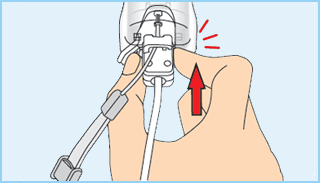

|
Sicherer Gebrauch der Wii-Fernbedienung |
❶ Trage die Handgelenksschlaufe! Vergewissere dich, dass bei jedem Spieler sowohl die Handgelenksschlaufe (RVL-018 oder RVL-018A) als auch der Stopper fest und sicher angelegt sind. Wenn mehrere Spieler abwechselnd mit derselben Wii-Fernbedienung spielen, muss jeder Spieler die Handgelenksschlaufe beim Spielen korrekt verwenden. Die Verwendung der Handgelenksschlaufe verhindert unbeabsichtigtes Werfen oder Fallenlassen der Wii-Fernbedienung, falls diese während des Spielens aus Versehen losgelassen wird.


❷ Halte die Wii-Fernbedienung fest in der Hand und lasse sie nicht los!
Lasse während des Spielens die Wii-Fernbedienung nicht los, selbst wenn du die Handgelenksschlaufe verwendest, und bewege dich beim Spielen nicht mehr als nötig. Spielst du zum Beispiel Bowling in Wii Sports™, dann musst du zum Loslassen der Kugel im Spiel nur  auf der Wii-Fernbedienung loslassen – LASSE AUF KEINEN FALL DIE Wii-FERNBEDIENUNG SELBST LOS. Solltest du beim Spielen feuchte Hände bekommen, unterbrich das Spielen unbedingt und trockne deine Hände und die Wii-Fernbedienung ab. Übermäßige Bewegungen und ein Loslassen der Wii-Fernbedienung könnten die Handgelenksschlaufe beschädigen. Sollte dir die Wii-Fernbedienung entgleiten, könnte dies zu Verletzungen von in der Nähe stehenden Personen oder zu Schäden an nahegelegenen Objekten führen.
auf der Wii-Fernbedienung loslassen – LASSE AUF KEINEN FALL DIE Wii-FERNBEDIENUNG SELBST LOS. Solltest du beim Spielen feuchte Hände bekommen, unterbrich das Spielen unbedingt und trockne deine Hände und die Wii-Fernbedienung ab. Übermäßige Bewegungen und ein Loslassen der Wii-Fernbedienung könnten die Handgelenksschlaufe beschädigen. Sollte dir die Wii-Fernbedienung entgleiten, könnte dies zu Verletzungen von in der Nähe stehenden Personen oder zu Schäden an nahegelegenen Objekten führen.
Weitere Informationen zum Gebrauch der Handgelenksschlaufe
Der Spielablauf mit der Wii-Fernbedienung kann schnelle und dynamische Bewegungsabläufe mit sich bringen. Bitte verwende stets die Handgelenksschlaufe, um das Risiko zu verringern, dass dir die Wii-Fernbedienung beim Spielen aus der Hand gleitet und dadurch Schäden an der Umgebung sowie der Wii-Fernbedienung entstehen oder andere Personen verletzt werden.
Wenn du das Nunchuk™ zusammen mit der Wii-Fernbedienung verwendest, lies bitte die folgenden Instruktionen bezüglich des korrekten Anschließens und Gebrauchs von Nunchuk und Handgelenksschlaufe.
Weitere Informationen zum sicheren Gebrauch findest du in der Wii-Bedienungsanleitung – Vorbereitung des Systems unter „5. Gebrauch der Wii-Fernbedienung".
❶ Führe die Schnur der Handgelenksschlaufe durch den Haken.
❷ Stecke den Nunchuk-Stecker in den Erweiterungsanschluss an der Unterseite der Wii-Fernbedienung.

❸ Stelle sicher, dass die Schnur der Handgelenksschlaufe durch den Haken läuft.

 |
|
 |
|
Wii Balance Board Sicherheitshinweise |
|
 |
|
 |
Bitte befolge bei der Verwendung des Wii Balance Boards die folgenden Sicherheitshinweise, um Verletzungen zu vermeiden und Schäden am Wii Balance Board™ oder an umstehenden Gegenständen vorzubeugen.
Bitte lies dir die Bedienungsanleitung des Wii Balance Boards durch, um weitere Informationen zum sicheren Gebrauch des Wii Balance Boards zu erhalten.
|
ACHTUNG |
Springe nicht auf dem Wii Balance Board und lasse keinesfalls mehrere Personen zusammen das Wii Balance Board betreten.
Verwende das Wii Balance Board ausschließlich barfuß. Die Verwendung des Wii Balance Boards mit Socken oder Schuhen könnte zu Unfällen, Verletzungen, Schäden an umstehenden Gegenständen und/oder einem Funktionsausfall des Wii Balance Boards führen.
Solltest du bei der Verwendung des Wii Balance Boards feuchte Hände oder Füße bekommen, pausiere die Software und trockne deine Hände bzw. Füße sowie das Wii Balance Board mit einem trockenen Tuch ab, bevor du mit der Verwendung fortfährst.
Verlagere dein Körpergewicht nicht auf die Ränder des Wii Balance Boards und wende keine übermäßige Kraft auf die Ränder an. Ein Abrutschen, Stolpern oder Herunterfallen kann zu Unfällen, Verletzungen, Sachschäden und Beschädigungen des Wii Balance Boards führen.
Die Verwendung des Wii Balance Boards auf einer instabilen Unterlage kann zu Unfällen und Verletzungen, Sachschäden und Beschädigungen des Wii Balance Boards führen. Stelle vor der Verwendung des Wii Balance Boards immer sicher, dass das Wii Balance Board auf einer stabilen Unterlage platziert ist, auf der es nicht kippen oder rutschen kann. Platziere das Wii Balance Board stets auf einer flachen Oberfläche im Rauminneren wie beispielsweise dem Fußboden. Folgende Orte sind für die Platzierung des Wii Balance Boards nicht geeignet:
Orte, an denen Wasser verwendet wird (z. B. Badezimmer)
Rutschige Matten oder rutschige Fußböden (z. B. Fliesen)
Instabile Unterlagen (z. B. dicke Teppiche)
Orte im Freien
|
Hinweise zum Spielbereich
|
Sorge für ausreichend Platz zum Spielen! Während des Spielens mit der Wii-Fernbedienung wirst du möglicherweise Platz zum Bewegen benötigen. Stelle sicher, dass sich in deinem Bewegungsumfeld weder andere Personen noch Gegenstände oder Möbel befinden, um ein Aneinanderstoßen zu vermeiden. Beachte bitte auch den empfohlenen Mindestabstand von einem Meter zum Fernseher.
Diese Informationen kannst du auch unter www.nintendo.com/healthsafety nachlesen.
|
60Hz (480i)-Modus |
Vielen ist der Unterschied zwischen dem 50Hz- und dem 60Hz-Modus nicht bekannt. Da die meisten neueren Fernsehgeräte den 60Hz-Modus unterstützen, lohnt es sich herauszufinden, ob dein Fernseher kompatibel ist. Vereinfacht gesagt bezieht sich der Begriff Hz (Hertz) auf die Anzahl der Bilder, die pro Sekunde auf dem Bildschirm dargestellt werden.�
50Hz stellt 25 Bilder pro Sekunde dar, wohingegen 60Hz annähernd 30 Bilder pro Sekunde darstellt. Dies klingt nicht nach einem gravierenden Unterschied, allerdings ist die Qualitätsverbesserung auf dem Bildschirm eindeutig zu sehen. Die 60Hz (480i)-Darstellung bietet Spielern eine qualitativ hochwertigere Bilddarstellung. Besondere Merkmale sind die sanftere Bildwiedergabe mit reduziertem Flimmern und eine optimale Spielgeschwindigkeit, die zu einer großartigen Spielerfahrung beitragen.�
Standardmäßig ist der 50Hz (576i)-Modus ausgewählt. Um den 60Hz (480i)-Modus zu aktivieren, wähle diesen Modus bitte in den Wii-Systemeinstellungen unter FERNSEHER aus. Manche, in erster Linie ältere, Fernsehgeräte können jedoch keine Spiele im 60Hz (480i)-Modus darstellen. Daher kann es bei einem kleinen Prozentsatz der Spieler zu Schwierigkeiten bei der Darstellung dieses Spiels auf ihren Fernsehgeräten kommen. Um herauszufinden, ob dein Fernsehgerät den 60Hz (480i)-Modus darstellen kann, schlage bitte in der zugehörigen Bedienungsanleitung nach oder wende dich an den zuständigen Hersteller.
Sollte nach dem Wechsel zum 60Hz (480i)-Modus der Bildschirm schwarz bleiben oder ein verzerrtes Bild darstellen, ist es wahrscheinlich, dass dein Fernseher den 60Hz (480i)-Modus nicht unterstützt. Wenn du den RESET-Knopf der Wii-Konsole betätigst, während du unten auf dem Steuerkreuz gedrückt hältst, startet das Wii-System im 50Hz (576i)-Modus neu. Weitere Informationen zur Einstellung des Darstellungsmodus erhältst du in der Wii-Bedienungsanleitung – Kanäle und Einstellungen.
Wenn du zum Anschluss ein Wii-RGB-Kabel (RVL-013) (separat erhältlich) verwendest und das Fernsehgerät über einen RGB-Eingang und eine PAL60-Kompatibilität verfügt, oder wenn du zum Anschluss ein Wii-Komponenten-Video-Kabel (RVL-011) (separat erhältlich) verwendest und das Fernsehgerät über einen Komponenten-Eingang verfügt, erfolgt eine wesentlich schärfere Bildwiedergabe.
Die EDTV/HDTV (480p)-Darstellung erfolgt progressiv und bietet Spielern die qualitativ hochwertigste Bilddarstellung. Besondere Merkmale sind die gestochen scharfe Bildwiedergabe und eine optimale Spielgeschwindigkeit mit stark reduziertem Flimmern, die zu einer großartigen Spielerfahrung beitragen. Wir von Nintendo® möchten, dass die Spieler unsere Spiele unter den bestmöglichen Bedingungen erleben.
Abhängig von der Kombination des verwendeten Kabels und des Fernsehgerätes kann es jedoch sein, dass dieser Modus nicht dargestellt werden kann. Schlage bitte in der zugehörigen Bedienungsanleitung nach oder wende dich an den Hersteller, um zu erfahren, ob dein Fernsehgerät über die erforderliche Progressive Scan-Technik verfügt. Stelle außerdem sicher, das Wii-Komponenten-Video-Kabel (RVL-011) (separat erhältlich) zu verwenden und Progressive Scan am Fernsehgerät zu aktivieren, wenn du diesen Modus auswählst.
Standardmäßig ist der 50Hz (576i)-Modus ausgewählt. Um den EDTV/HDTV (480p)-Modus zu aktivieren, wähle diesen Modus bitte in den Wii-Systemeinstellungen unter FERNSEHER aus. Weitere Informationen zur Einstellung des Darstellungsmodus erhältst du in der Wii-Bedienungsanleitung – Kanäle und Einstellungen.